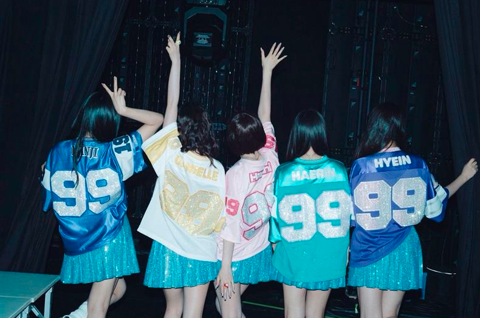

¡Estilo musical!
Musicalmente, New Jeans mezcla pop, R&B y elementos de hip-hop, creando un sonido pegajoso y atractivo. Sus canciones a menudo presentan ritmos melódicos y letras que abordan temas de juventud y amor. Su enfoque en la producción fresca y experimental les ha permitido destacar en la escena del K-pop.